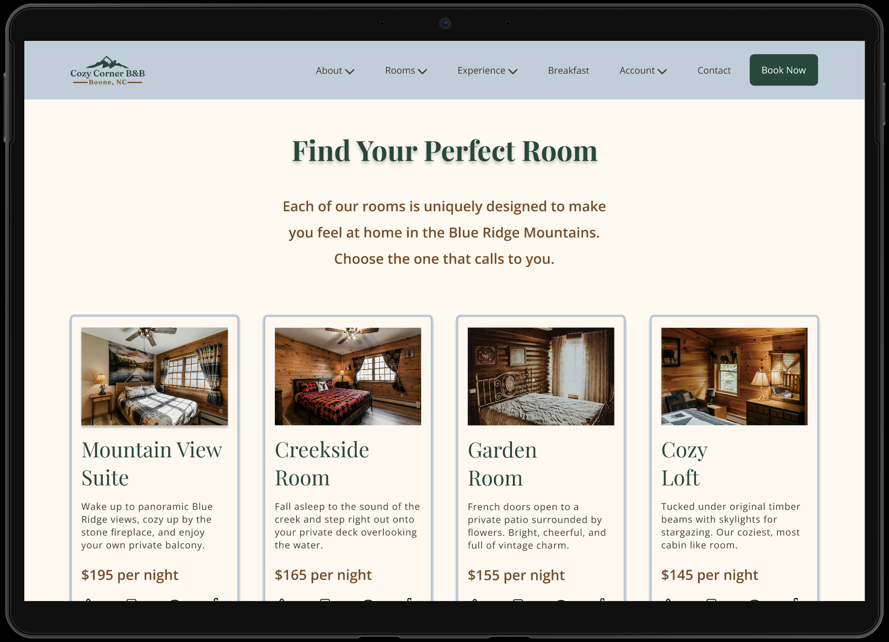
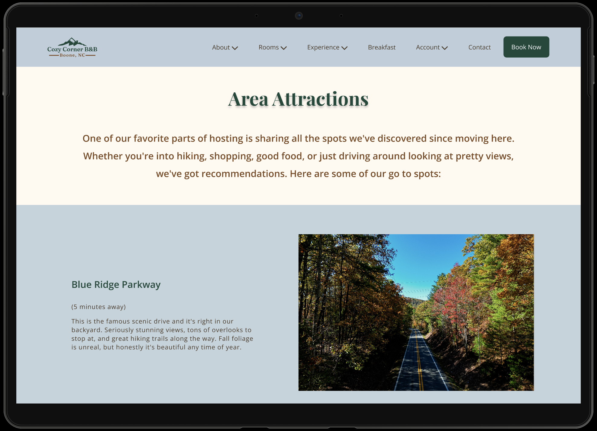
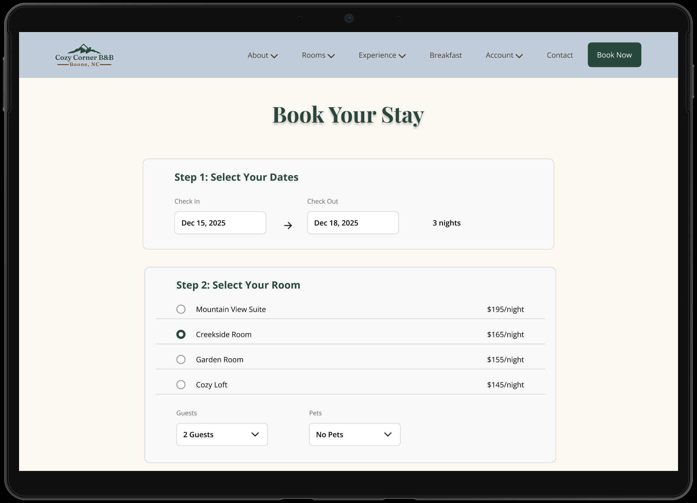
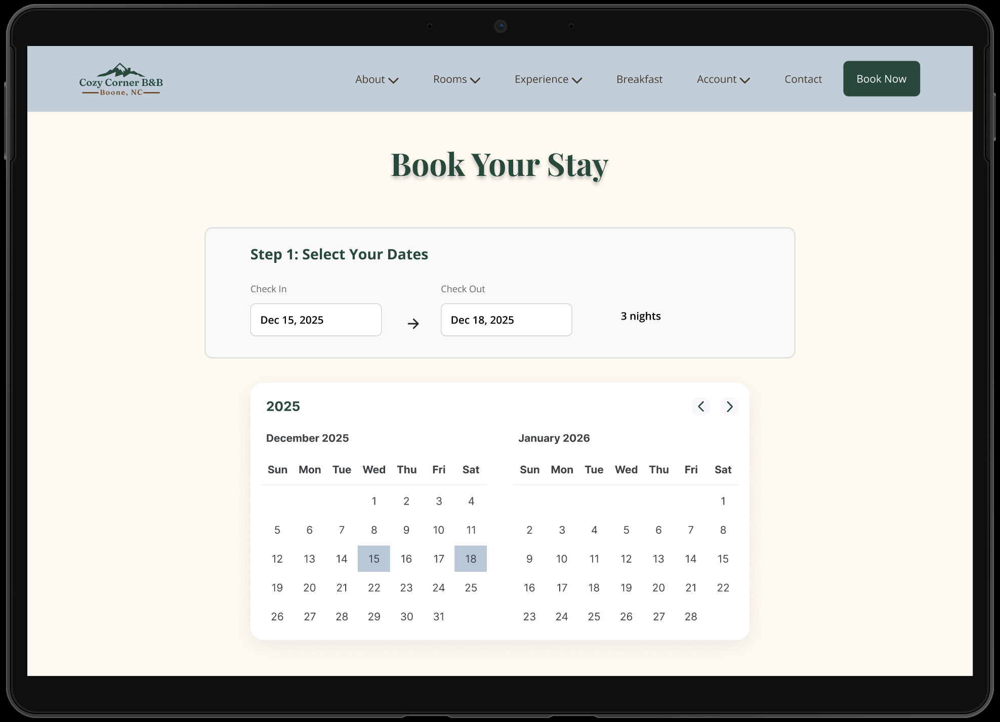
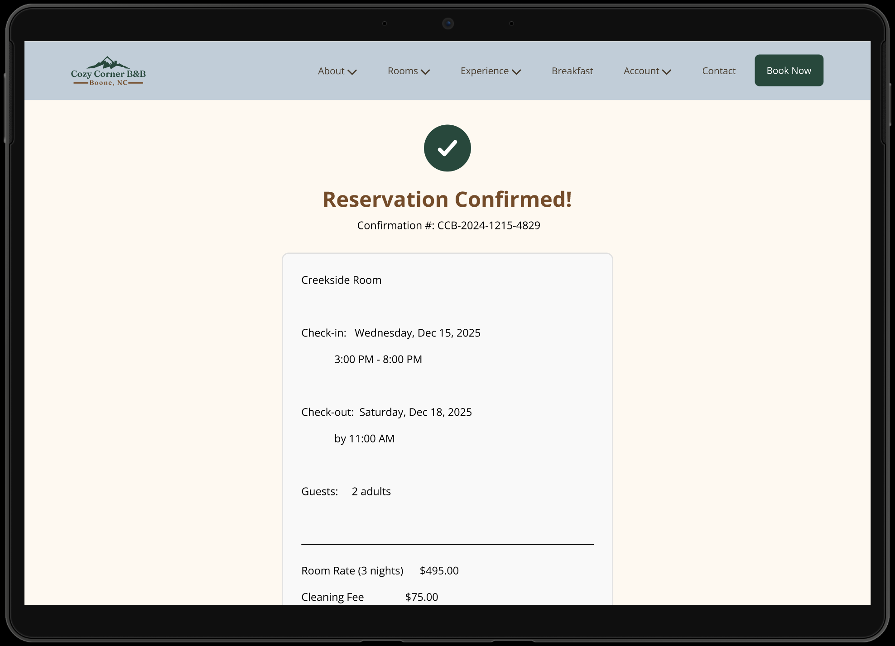

Add img/project-bnb.jpg
Add img/project-bnb.jpg
Cozy Corner B&B is a fictional bed and breakfast that needed a website to turn visitors into guests. The design had to show off the rooms, make booking simple, and feel trustworthy enough that someone would actually want to reserve a stay.
I designed the whole multi-page site in Figma, including the homepage, rooms page with a carousel, the full booking flow, dining section, and account pages. Everything is connected in an interactive prototype.
Looked at hospitality sites and mapped out where booking flows fall apart.
Planned the site structure and mapped the end-to-end booking journey.
Warm typography, room carousel, and a clean calendar UI.
Full Figma prototype: browse a room, pick dates, book, and confirm.
End-to-end usability test on the booking and account flows.
Screenshots from the Figma prototype.





Click through below or open it directly in Figma.
This one taught me that hospitality design is really about trust. The fonts, photos, and flow all have to work together so someone feels comfortable enough to book a stay somewhere new. Small details go a long way.